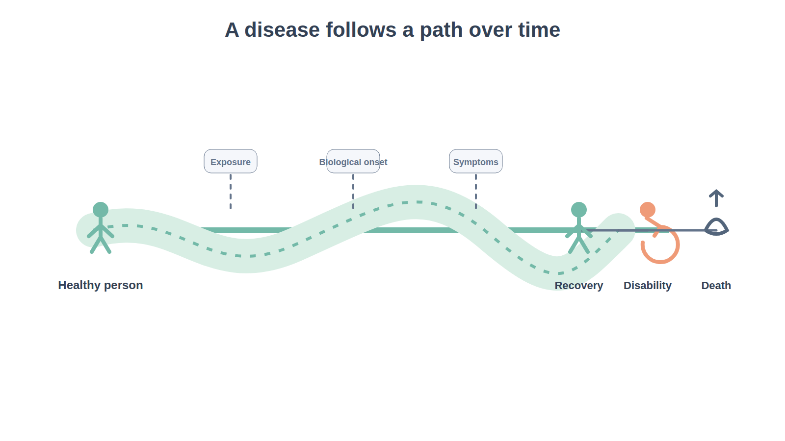
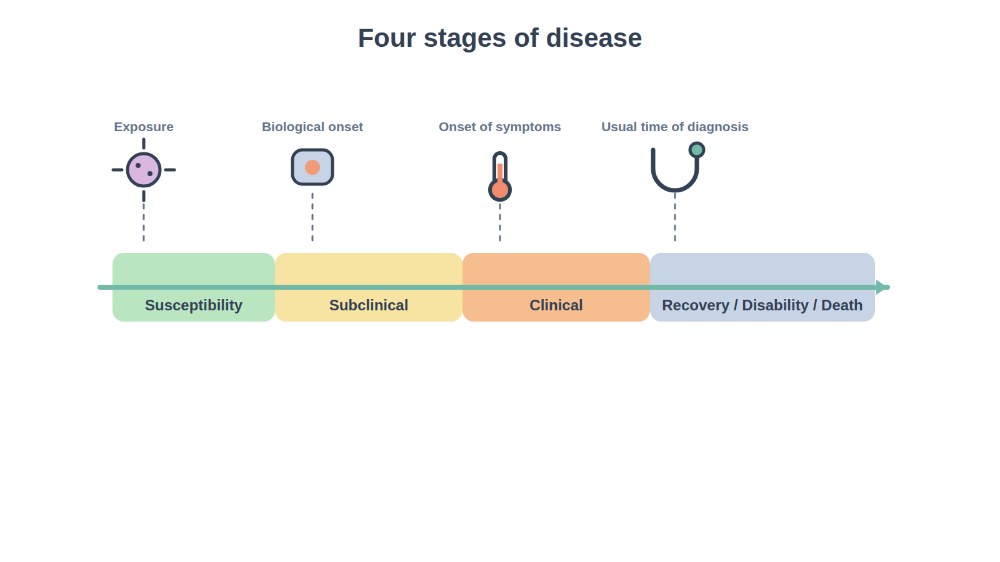
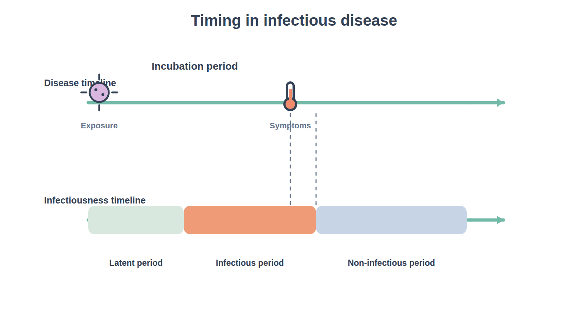
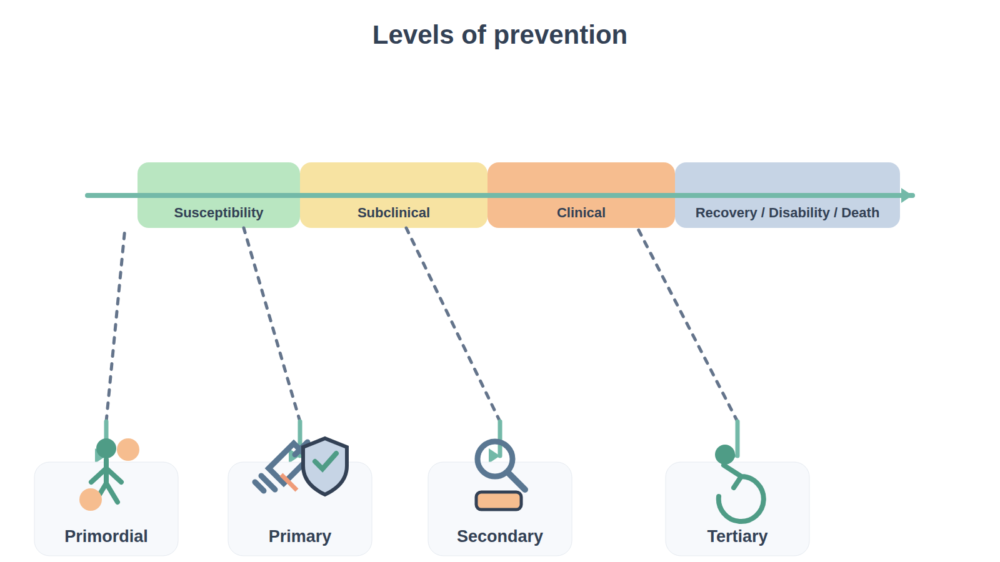

Every disease has a story. It starts quietly, often long before anyone feels sick, then it develops, shows itself, and finally ends in recovery, disability, or death. Epidemiologists call this story the natural history of disease. And here is the exciting part: once you know the story, you know exactly where you can step in and change the ending. That is what levels of prevention are all about.

The natural history of a disease is the course a disease takes in a person over time, if nobody intervenes. It begins with exposure to, or a build-up of, factors that can cause the disease. If there is no prevention or treatment, it ends in one of three ways: recovery, disability, or death.
A few things worth knowing about it:
The path is different for every disease. Take tuberculosis (TB). After a person is exposed, several outcomes are possible:
| Path | What happens |
|---|---|
| 1a | Primary infection with complete remission (death later from other causes) |
| 1b | Fatal tuberculous meningitis |
| 2a | Recurrence with successful treatment (death later from other causes) |
| 2b | TB with residual disability (TB contributes to, or causes, death) |
| 2c | Recurrence with fatal outcome |
For coronary heart disease the story starts much earlier than you might expect. The causes begin to exert their influence long before any symptoms, even in early life. The disease can only be diagnosed later, when it first shows up, for example as a heart attack (myocardial infarction, MI), and it may then recur and end in death.
Whether a disease is infectious or non-infectious, its natural history has four stages:

The disease has not started yet, but the ground has been prepared by factors that make it more likely. Think of it as dry grass waiting for a spark.
| Disease | Risk factors / exposure |
|---|---|
| Infectious disease | Microorganism |
| Coronary heart disease | High cholesterol, smoking, sedentary lifestyle |
| Stroke | Smoking, hypertension, high cholesterol |
| Cancer | Radiation, smoking |
| Liver cirrhosis | Alcohol consumption |
Risk factors can be modifiable (we can change them, like smoking) or non-modifiable (we cannot, like age). Susceptibility depends on the host, the agent, the environment, and sometimes a vector.
Now the disease process has begun inside the body, but the person feels completely fine. This stage starts after exposure and ends when symptoms appear. It has two common names:
| Disease | Subclinical stage |
|---|---|
| Hepatitis A | Incubation period: 2-6 weeks |
| HIV / AIDS | Incubation period: 6 months to 8 years |
| Myocardial infarction | Latency period from hardening of the coronary arteries to symptoms (unknown duration) |
| Malignancy | Latency period from pre-cancerous changes (unknown duration) |
As a rule, diseases with a short incubation period usually have a short course (acute disease), although acute disease can still be severe and have long-lasting effects, such as post-viral syndromes. Diseases with a long latency usually have a long clinical course, and are called chronic diseases. Strangely, some chronic diseases still end suddenly, such as a stroke or a heart attack.
Even though the person feels well, some changes can often be detected with tests, and this is where most screening programmes aim. Examples are high blood glucose in a person with no symptoms (diabetes), hardening of the coronary arteries before angina or a heart attack, and pre-cancerous changes in tissue (dysplasia, cancer in situ).
This stage starts with the onset of symptoms. By now there are enough changes in the body for recognisable signs and symptoms. Most diagnoses are made here. Doctors often divide this stage into classes or staging groups to manage patients better and for epidemiological purposes.
Not everyone follows the same path. In some people the disease may never become clinically apparent, while in others it can range from mild to severe or even fatal.
This is where the story ends:
With infectious diseases there is an extra question: when can the person pass the germ to someone else? This is not always the same as when they feel ill, so epidemiologists track several time periods:

| Term | Meaning |
|---|---|
| Incubation period | Time from infection to the development of symptoms |
| Latent period | In communicable diseases: time from exposure (infection) to the start of infectiousness. In non-communicable diseases: time from exposure to the onset of symptoms |
| Infectious period | The time during which the host can infect another susceptible person |
| Non-infectious period | The time after the host has stopped being able to transmit the disease |
During the incubation period a person may or may not be able to infect others. That is why people can spread some infections before they even know they are sick.
Different diseases have different patterns. The lecture compares chickenpox, HIV, and malaria in timeline diagrams. In the chickenpox example, the person goes through a latent period, an infectious period, and finally a non-infectious period. In the HIV example, the diagram shows the latent and infectious periods but no non-infectious period.
Knowing how a disease unfolds is not just academic. It helps us to:
That last point is the bridge to our next topic.
In epidemiology, prevention means measures that stop or slow down the progress of disease. Why does timing matter so much? Because the damage of a disease can become fixed and irreversible as it advances. So the aim is to push intervention back to the earliest point possible: the risk factors and the early changes. This puts the emphasis on preventing illness rather than only curing it.
The WHO (1984) describes prevention as covering measures not only to prevent disease from occurring, such as reducing risk factors, but also to arrest its progress and reduce its consequences once it is established.
The levels of prevention only make full sense when matched against the natural history of disease. There are four levels:

This is prevention of the emergence or development of risk factors in the first place. It is especially useful for chronic diseases. Many health problems, such as obesity and diabetes, have early roots in childhood, because that is when lifestyles are formed (smoking, eating patterns, physical exercise). So efforts focus on discouraging children from adopting harmful lifestyles, mainly through individual and mass education.
This keeps the disease process from becoming established, either by eliminating causes or by increasing resistance to the disease. The goal is to change risk factors in a favourable direction so the pathological process never begins. It can use a population strategy (aimed at everyone) or a high-risk individual strategy (aimed at people at greater risk). It has two major categories:
Health promotion. The WHO (1984) defines this as the process of enabling people to increase control over the determinants of health and thereby improve their health. It covers lifestyle changes, good nutrition, prudent behaviour, and a safe environment, and it needs participation and change from society. It involves physicians, health authorities, and the community. Examples: health education, nutritional modification, lifestyle and behavioural changes, environmental modifications.
Specific protection. Needed when general health promotion is not fully effective. It targets a specific disease or type of injury. Examples:
This interrupts the disease process before it becomes symptomatic, through early detection and prompt treatment. The result may be:
The main tool is screening: testing people who have no symptoms to uncover disease at an early stage.
Once the disease has caused symptoms, tertiary prevention limits its physical and social consequences. The goal is to improve survival and quality of life. It has two activities:
This table, a modified version of Leavell and Clark's levels of prevention (1965), links each stage of disease with its level of prevention and the type of response:
| Stage of disease | Level of prevention | Type of response |
|---|---|---|
| Pre-disease (susceptibility stage) | Primary prevention | Health promotion and specific protection |
| Latent disease (subclinical stage) | Secondary prevention | Pre-symptomatic diagnosis (screening) and treatment |
| Symptomatic disease (clinical, recovery and disability stage) | Tertiary prevention | Disability limitation for early symptomatic disease; rehabilitation for late symptomatic disease |
Primordial prevention sits just before all of these, working on the risk factors themselves before they appear.
Here is a quick example using heart disease:
The lecture suggests a fun exercise: watch the film World War Z, then discuss the natural history of the disease it portrays and how it could be prevented. Which stage would you target first? What would primary, secondary, and tertiary prevention look like?
Every disease follows a path: susceptibility, subclinical disease, clinical disease, then recovery, disability or death. Knowing that path shows us where to act. Primordial prevention stops risk factors from appearing, primary prevention stops disease from starting, secondary prevention catches it early, and tertiary prevention limits the damage. The earlier we act, the more we can prevent.
Know the path. Match the stage. Act early.
Further reading: